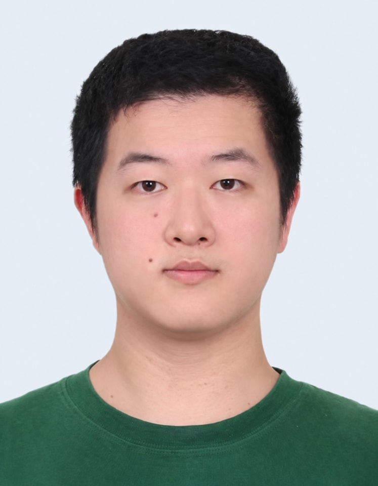

Back to Members
USTC IonQNet Group
Cheng-Hao Zhang（章成昊）
PhD Student
博士研究生
University of Science and Technology of China
Quantum Network
Ion Trap Node

Research and Background
Contact
- Email: zch184@mail.ustc.edu.cn
- Room: D417
- Address: Hefei National Laboratory
Education
- 2025.6-now, University of Science and Technology of China, School of Emerging Technology, Doctor
- 2023.9-2025.6, University of Science and Technology of China, Department of Optics and Optical Engineering, Master
- 2019.9-2023.6, University of Science and Technology of China, School of the Gifted Young, Bachelor
Research
Cavity QED, distributed quantum computation with trapped ions.
Publications
4BibTeX
@article{Chen2026MetalShielded,
author = "Chen, Wei-Bin and Fang, Ding and Zhang, Cheng-Hao and Cui, Jin-Ming and Huang, Yun-Feng and Li, Chuan-Feng and Guo, Guang-Can",
title = "Design and fabrication of metal-shielded fiber-cavity mirrors for ion-trap systems",
journal = "Quantum Science and Technology",
year = "2026",
volume = "11",
number = "1",
pages = "015045",
doi = "10.1088/2058-9565/ae379e",
url = "https://doi.org/10.1088/2058-9565/ae379e"
}
BibTeX
@article{Fang2025CavityThermometry,
author = "Fang, Ding and Chen, Wei-Bin and Zhang, Cheng-Hao and Cui, Jin-Ming and Huang, Yun-Feng and Li, Chuan-Feng and Guo, Guang-Can",
title = "Cavity-assisted thermometry for a single trapped ion",
journal = "Physical Review Applied",
year = "2025",
volume = "24",
number = "2",
pages = "024037",
doi = "10.1103/vjl6-crbg",
url = "https://doi.org/10.1103/vjl6-crbg"
}
BibTeX
@article{Fang2025FiberMicrocavity,
author = "Fang, Ding and Zhang, Chenghao and Chen, Weibin and Cui, Jinming and Huang, Yunfeng and Li, Chuanfeng and Guo, Guangcan",
title = "A fast-tunable and stable fiber microcavity for coupling {Ba$^{+}$} ions in quantum networks",
journal = "Chinese Optics Letters",
year = "2025",
volume = "23",
number = "12",
pages = "120201",
doi = "10.3788/COL202523.120201",
url = "https://doi.org/10.3788/COL202523.120201"
}
BibTeX
@article{Fang2024ArcDischarge,
author = "Fang, Ding and Cui, Jin-Ming and Chen, Wei-Bin and Chen, Yan and Li, Rui-Rui and Zhang, Cheng-Hao and Huang, Yun-Feng and Li, Chuan-Feng and Guo, Guang-Can",
title = "Arc discharge method to fabricate large concave structures for open-access fiber {Fabry-P{\'e}rot} cavities",
journal = "Optics Express",
year = "2024",
volume = "32",
number = "3",
pages = "2906--2915",
doi = "10.1364/OE.501532",
url = "https://doi.org/10.1364/OE.501532"
}